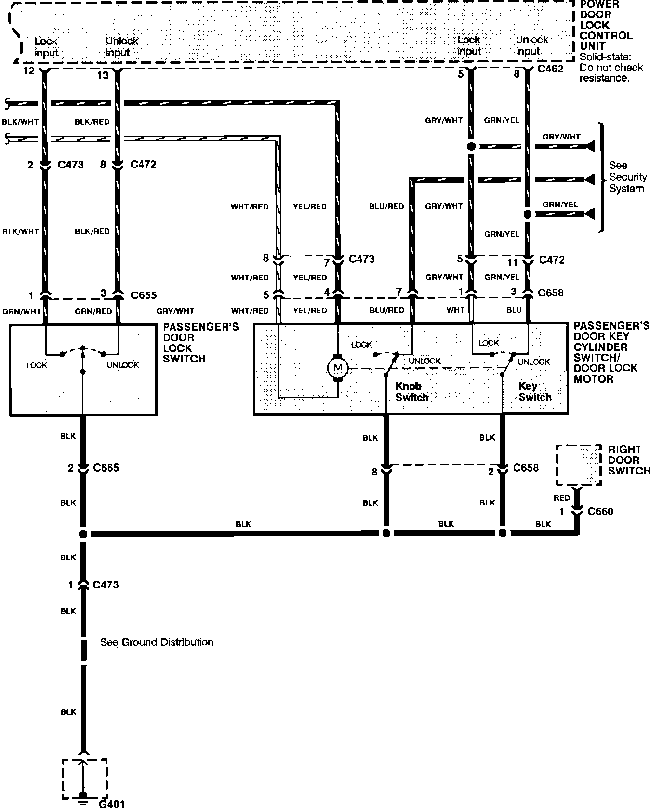

Operation CHARM
: Car repair manuals for everyone.
Home
>>
Acura
>>
1991
>>
NSX V6-3.0L DOHC
>>
Repair and Diagnosis
>>
Body and Frame
>>
Locks
>>
Door Locks
>>
Diagrams
>>
Electrical Diagrams
>>
Less Keyless Entry
>>
Part 3 of 3
Part 3 of 3
Power Door Locks:
Power Door Locks:
